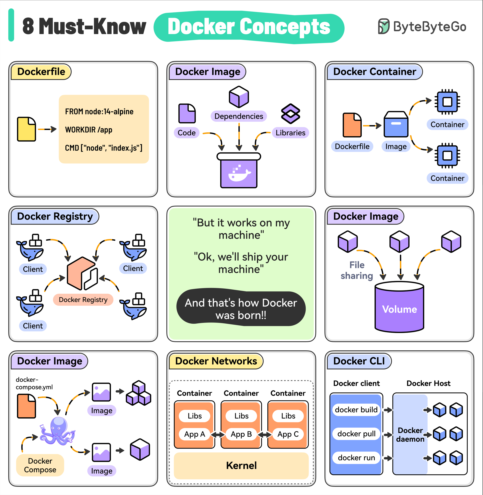

It contains the instructions to build a Docker image by specifying the base image, dependencies, and run command.
A lightweight, standalone package that includes everything (code, libraries, and dependencies) needed to run your application. Images are built from a Dockerfile and can be versioned.
A running instance of a Docker image. Containers are isolated from each other and the host system, providing a secure and reproducible environment for running your apps.
A centralized repository for storing and distributing Docker images. For example, Docker Hub is the default public registry but you can also set up private registries.
A way to persist data generated by containers. Volumes are outside the container’s file system and can be shared between multiple containers.
A tool for defining and running multi-container Docker applications, making it easy to manage the entire stack.
Used to enable communication between containers and the host system. Custom networks can isolate containers or enable selective communication.
The primary way to interact with Docker, providing commands for building images, running containers, managing volumes, and performing other operations.